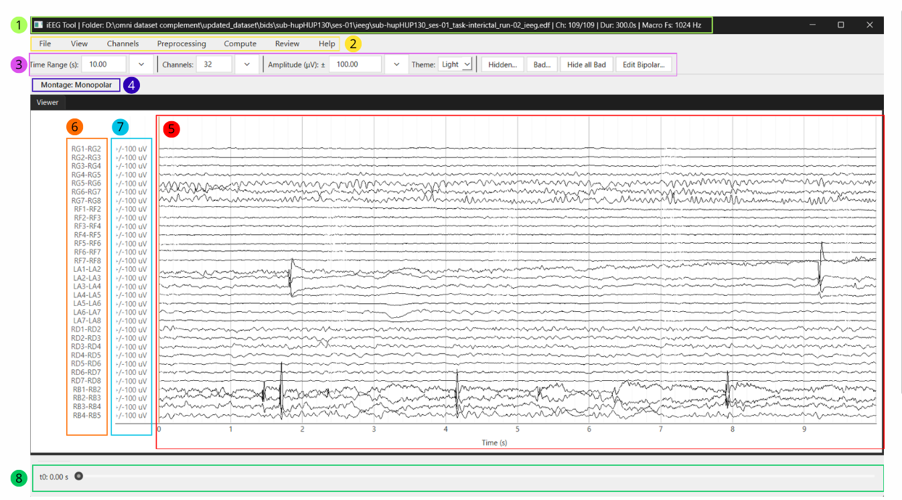

User Guide
1. Getting Started
1.1 Create a New Project
Select File > New Project... to create a project.
- Select the raw EEG/iEEG recording.
- Choose the name and location of the
.ieegproject file. - Confirm the file-selection dialogs.
The application opens the recording, links it to the project, and creates the initial project file.
Supported recording formats are .edf, .bdf, .fif, .vhdr, .set, and .cnt.
1.2 Open an Existing Project
Select File > Open Project... and choose an existing .ieeg project file.
The application restores the state stored in the project. If the linked raw recording has moved, it asks you to locate the recording before continuing.
2. Main Window
2.1 Overview

- Window title and recording summary: file path, selected/total channels,
- Menu bar (Section 2.2)
- Toolbar (Section 2.3)
- Current montage/reference indicator
- Signal viewer displaying EEG/iEEG traces (Section 3)
- Channel labels
- Amplitude axis (µV)
- Time navigation bar
duration, and sampling frequencies
2.2 Menu Bar
The menu bar provides access to the application's main functions.
- File: Create, open, save, and close projects, or exit the application.
- View: Use Zoom Selection, Reset Zoom, and Scalogram Mode.
- Channels: Assign channels to the Macro or Micro group. All channels are
- Preprocessing: Select a montage/reference, configure display filters, and
- Compute: Run Recruitment Energy Index (REI), gamma-spike, and
- Review: Create and manage manual annotations.
- Help: Open the HTML user guide or the keyboard and mouse shortcut summary.
assigned to Macro by default.
inspect power spectra.
high-frequency oscillation (HFO) analyses from the computation panel.
2.3 Toolbar
The toolbar provides quick access to the main display settings.
- Time Range (s): number of seconds displayed in the viewer
- Channels: number of channels displayed simultaneously
- Amplitude (µV): vertical scale of the displayed signal; this affects only
visualization and does not modify the raw data or computation results
For these three settings, you can either enter a value directly or choose one from the drop-down menu.
Additional controls include:
- Theme: switch between Light and Dark interface themes
- Hidden...: review and restore hidden channels
- Bad...: review and unmark bad channels
- Hide all Bad: hide all channels currently marked as bad
- Edit Bipolar...: edit the active bipolar montage; this button is visible
only in Bipolar mode (Section 5.2)
3. Exploring the Recording
3.1 Navigation
3.1.1 Channel Navigation
Move vertically through the channel list by:
- scrolling the mouse wheel over the signal viewer or channel labels
- pressing Up Arrow or Down Arrow
- holding Shift while pressing an arrow key to move faster
- holding Ctrl while pressing an arrow key to move much faster
3.1.2 Time Navigation
Use the navigation bar below the signal viewer to move through the recording.
Keyboard shortcuts:
- Left Arrow and Right Arrow to move backward or forward
- Shift + Left Arrow and Shift + Right Arrow to move faster
- Ctrl + Left Arrow and Ctrl + Right Arrow to move much faster
3.2 View Menu
3.2.1 Zoom Selection
Use View > Zoom Selection to zoom directly into a time and channel region.
- Press and hold the left mouse button
- Drag a rectangle over the region you want to inspect
- Release the mouse button
The viewer zooms into the selected time and channel ranges. Press Escape to cancel selection mode before applying a zoom.
Double left-click in the viewer to go back one zoom step.
Use View > Reset Zoom to return to the view that was active before the zoom sequence started.
3.2.2 Scalogram Mode
Use View > Scalogram Mode to open a time-frequency view from one channel and one selected time interval.
- Click View > Scalogram Mode
- Drag horizontally on the channel you want to inspect
- Release the mouse button
The scalogram window shows the selected channel context, raw signal, scalogram image, frequency-range slider, and hover readout. Very short selections are ignored.
Press Escape to cancel scalogram mode before opening a window.
4. Managing Channels
4.1 Micro/Macro Groups
The application assigns all channels to Macro by default. Use Channels > Channel Groups... to assign the appropriate channels to Micro.
- Use the search field or sort the table by Channel or Group if needed.
- Select one or more channel rows.
- Click Set selected to Micro or Set selected to Macro.
- Click OK to apply the assignments, or Cancel to discard them.
Channel groups control macro/micro styling and group-aware review tools.
4.2 Selecting Channels
To select one channel, left-click its trace or label. To select several channels:
- Ctrl + click adds or removes one channel
- Shift + click selects a range
- Ctrl + Shift + click adds a range to the current selection
Selected channels use thicker traces. Trace and label colors continue to show the channel group and current theme; bad channels remain red.
4.3 Hidden Channels
To hide one or more channels, select them, right-click a selected trace or label, and choose Hide.
To restore hidden channels, click Hidden... on the toolbar.
Hidden channels disappear from the visible display but are not deleted from the recording.
4.4 Bad Channels
To mark one or more channels as bad, select them, right-click a selected trace or label, and choose Mark as bad.
If all selected channels are already marked as bad, the context menu instead offers Unmark as bad.
To review or unmark bad channels, click Bad... on the toolbar. From this menu, you can unmark individual channels or clear all bad-channel markings.
Bad channels are excluded from review-related computations and from automatic montage generation.
5. Preprocessing
5.1 Montage / Reference
Use Preprocessing > Montage / Reference to switch reference mode.
Available options:
- Monopolar: shows each channel as imported
- Bipolar: builds consecutive pairs within each electrode and displays
- Average: subtracts the shared average from each channel
- Median: subtracts the shared median from each channel
- Common Reference...: subtracts one chosen physical channel from each displayed channel
Channel 1 - Channel 2
Average and Median exclude bad channels from the reference pool and mask samples annotated as Bad segment while calculating the shared reference. Hidden channels remain in the reference pool.
The automatic bipolar montage skips bad, unrecognized, and non-consecutive contacts. If the imported channel labels already look bipolar, the application asks for confirmation before applying another bipolar derivation.
5.2 Edit Bipolar Montage
The toolbar Edit Bipolar... button is visible and enabled only while a valid Bipolar montage is active.
The editor lets you:
- change Channel 2 in automatic pairs
- add manual pairs
- sort rows by pair name or origin
- restore the automatic montage with Back to default
- apply edits with OK or discard them with Cancel
Rules checked by the editor:
- Channel 1 and Channel 2 cannot be the same
- duplicate bipolar names are not allowed
- cross-electrode pairs trigger a warning, but can be kept intentionally
- bad channels are unavailable when choosing channels for edited pairs
5.3 Display Filters
Use Preprocessing > Display Filters... to show or hide the display-filter controls above the signal viewer.
Use Scope to choose which filter profile to edit:
- All applies the same settings to Macro and Micro channels.
- Macro changes only the Macro profile.
- Micro changes only the Micro profile.
Each profile contains:
- High Pass (Hz)
- Low Pass (Hz)
- Notch: Off
- Notch: 50 Hz + harmonics
- Notch: 60 Hz + harmonics
The high-pass and low-pass controls are numeric and cannot be empty. Enter 0 to disable that cutoff. For example, High Pass = 0 means that no high-pass filter is applied; Low Pass = 0 means that no low-pass filter is applied.
Click Apply filters to save the displayed values to the selected scope. Click Back to default to clear the selected scope's filters.
Validation rules:
- each active cutoff must be below the recording's Nyquist frequency
- when both cutoffs are active, the high-pass value must be lower than the
low-pass value
Display filters are non-destructive: the original recording is never modified. The active reference is applied first, followed by the appropriate Macro or Micro filter profile. For responsive browsing of large recordings, the viewer reads the visible interval with extra padding, filters it, and then crops the padding before plotting.
The PSD panel applies the same Macro and Micro display-filter profiles to the selected PSD interval. Computation algorithms have separate preprocessing rules: display high-pass and low-pass values are not automatically reused, while the selected notch mode is reused only where stated in the relevant computation section.
5.4 Power Spectrum
Use Preprocessing > Power Spectrum to inspect power spectral density (PSD) over a chosen recording interval. Enter a start and stop time in the interval dialog. The interval must remain inside the recording, and the stop time must be later than the start time. The PSD opens as a tab beside the main viewer and is calculated from the currently active montage/reference. In Bipolar mode, the PSD therefore uses the actual Channel 1 - Channel 2 signals.
Macro and Micro panels
The PSD tab is divided into independent Macro and Micro panels. Channel membership comes from Channels > Channel Groups.... Channels are assigned to Macro by default, so the Micro panel remains empty until at least one channel is assigned to Micro. If channel-group assignments change while the PSD tab is open, the two panels are refreshed automatically.
In Bipolar montage, each displayed bipolar pair is placed in the same PSD group as its first source channel (Channel 1). This keeps the derived channel in one panel even if a manually edited pair crosses Macro and Micro groups.
Each group has its own:
- Excluded channels list on the left
- Displayed channels list on the right
- PSD plot at the bottom
- channel selection, inclusion/exclusion controls, and zoom state
Macro and Micro channels are processed with their corresponding active display filter profiles before the PSD is calculated. The two panels can therefore show different filtered spectra for the same interval. PSD values are displayed in dB/Hz against frequency in Hz. The calculation uses Welch-style averaging with Hann windows, up to 2,048 samples per segment, and 50% overlap.
Displaying and selecting PSD curves
All channels in each group are included in its plot by default. This includes channels hidden from the main viewer and channels marked as bad. Excluding a channel from a PSD plot only changes the PSD tab; it does not hide the channel in the main viewer or change its Macro/Micro assignment.
- Select one or more channels under Displayed channels, then click
<<to - Select channels under Excluded channels, then click
>>to return them - Exclude all and Include all operate only on the corresponding Macro
- Click a displayed channel name or its curve to make it the active channel.
- Each plot can be zoomed independently. Double left-click inside a plot to
move them to Excluded channels.
to Displayed channels.
or Micro panel.
Its curve and list label are emphasized.
restore that plot's full default range.
Bad channels remain visible in red. Use Mark selected as bad or Unmark selected as bad on selected entries in either list to update the application-wide bad-channel state. The change is also reflected in the main viewer and relevant computations. A selected bad channel is shown with a thicker red curve.
6. Compute Menu
6.1 Open Computation Panel
Use Compute > Open Computation Panel to open the computation panel.
You can also right-click selected channels in the viewer and choose Open Computation Panel.
The panel uses the current dataset, selected channels, and current montage. It can be resized, docked, floated, or moved to another dock area.
Quick selection buttons:
- All: select all displayed channels
- Macro: select all displayed macro channels
- Micro: select all displayed micro channels
The Output section changes with the selected algorithm. Result review and export buttons become available after a successful run or import.
8.1.1 Import Previously Exported Results
Use Import results... in the computation panel to restore a result folder previously exported by the application. The importer detects the algorithm from the files in the selected folder:
- REI:
rei_summary.csvandrei_metadata.json - Gamma spike:
gamma_spike_events.csvandgamma_metadata.json - HFO:
hfo_events.csvandhfo_metadata.json
The application switches to the detected algorithm and restores its summaries, review grid, metadata, and viewer markers where available. The import is rejected if required files are missing, channels do not match the current recording/montage, or the metadata identifies a different source recording.
Load the matching recording and select the matching montage before importing.
8.1.2 Event Filters and Global Timeline
After gamma-spike or HFO results are opened, the main window shows event-class filters beside the montage label and a compact global event timeline below the viewer.
Gamma filters:
- non-gamma
- gamma
HFO filters:
- artifact
- HFO
- spkHFO
- eHFO
- spk-eHFO
- unclassified
Clearing a checkbox hides that class from both the signal viewer and the global timeline. The timeline spans the full recording, marks the currently visible time window, and uses the same class colors as the viewer. Click a timeline event to jump the viewer to its channel and time. Click an event marker directly in the signal viewer to open the corresponding gamma or HFO review grid.
Event markers follow the currently displayed channel names when the montage or reference display changes.
8.2 REI Mode
REI mode is designed for manual seizure-window entry and delayed execution.
The REI time section contains:
- seizure onset and offset
- baseline start and end
- ictal start and end
Default windows are derived from seizure onset:
- baseline start = seizure onset - 70 s
- baseline end = seizure onset - 10 s
- ictal start = seizure onset - 5 s
- ictal end = seizure onset + 20 s
REI runs only if all timing inputs are coherent and inside the recording when recording duration is available.
The current REI preprocessing uses:
- input data from the current montage
- confirmed bad channels excluded
- display filter ignored
- internal zero-phase 4th-order Butterworth bandpass
- default analysis frequency range: 60-140 Hz
- analysis frequency range editable from Advanced parameters...
- active notch setting used when enabled
- no automatic common-average reference
REI shows a bipolar montage recommendation before running. You can switch to Bipolar, run anyway, or cancel.
If no notch filter is selected before running, the software warns you so you can confirm whether to continue.
REI outputs:
- summary table with channel, REI score, rank, peak HFER activity, and recruitment delay
- heatmap with HFER activity around seizure onset, REI score side bars, sorting controls, and top-N display control
- export files with metadata, CSV outputs, saved heatmap figures, and
README.txt
8.3 Gamma Spike Mode
Gamma spike mode is designed for spike detection and gamma-activity review on selected channels.
The gamma spike time section contains:
- analysis start
- analysis end
By default, the gamma analysis window is set to the full recording.
Gamma spike detection uses a memory-conscious segmented pipeline:
- detector runs in 10-minute chunks with 10 seconds of context
- detector settings are
-bl 10 -bh 60 -h 60 -k1 3.65 -dec 200 - detections from chunks are merged and postprocessed once globally
- input data comes from the selected channels and current montage
- spike boundary and gamma details are computed one channel at a time from full-channel filtered signals
- boundary/gamma filtering keeps the selected software notch behavior, including 60 Hz harmonics when selected
If no notch filter is selected before running, the software warns you so you can confirm whether to continue.
During the run, the bottom-left status area shows the current processing step, time so far, and estimated time remaining when possible. A Cancel gamma run button is shown during processing.
When detection finishes, the status area keeps this summary until another computation starts or the computation panel is closed:
- gamma spike detection completed
- total spikes
- gamma-positive spikes
- total duration of the run
Gamma spike outputs inside the app:
- channel-level summary
- spike grid with raw trace, spike timing, boundary points, gamma window, and time-frequency view
- gamma spike heatmaps for review
- main-viewer markers and a global timeline with separate non-gamma and
gamma visibility controls
Gamma spike export creates:
gamma_channel_summary.csvgamma_spike_events.csvgamma_metadata.jsonREADME.txt
Gamma spike heatmaps are not saved during export because saving one heatmap per spike can create very large output folders.
Existing output files are not silently overwritten. If the target folder already contains gamma output files, the software asks for confirmation first.
8.4 HFO Mode
HFO mode is designed for high-frequency oscillation candidate detection, classification, review, and export on the selected channels.
The HFO time section contains:
- analysis start
- analysis end
By default, the HFO analysis window is set to the full recording.
The HFO input boundary is:
GUI/file layer -> prepared microvolt signal array -> HFO backend
The GUI and file layer handle:
- file loading
- channel selection
- user-defined interval selection
- montage and reference selection, including bipolar derivations
- conversion to microvolts
The HFO backend then handles:
- bad-channel exclusion
- the notch mode selected in the GUI
- route-specific preprocessing and sampling handling
- candidate detection
- waveform extraction
- classification
The notch filter is applied once by the HFO backend using the mode selected in the GUI. The GUI display filter controls the visible traces; the HFO backend uses the selected notch setting for computation.
Sampling requirements depend on the selected HFO classifier route:
pyhfo_pybrainpreserves native EDF sampling, matching the pyBrain GUI routepyhfo_omni_legacyrejects recordings below 1000 Hz and resamples higher-rateeHFOuses the Omni-compatible route: recordings below 1000 Hz are rejected,
recordings internally to 1000 Hz
and higher-rate recordings are resampled internally to 1000 Hz
The default validated user-facing HFO classifier is pyhfo_pybrain-80-500 Hz. It uses:
- candidate detectors: STE, MNI, and Hilbert
- pyBrain-compatible default band: 80-500 Hz
- 2-second waveform extraction around each candidate
- original pyHFO/pyBrain Model A for real-HFO acceptance
- original pyHFO/pyBrain Model S for spike-HFO classification after Model A accepts
the event
The HFO advanced-parameter dialog lets you:
- enable or disable candidate detectors
- edit detector parameters
- restore default detector parameters
- save the edited defaults for later GUI sessions
At least one candidate detector must remain selected. Detector-specific parameter fields are disabled when their detector is disabled. Advanced changes are applied only after clicking Save in the dialog.
Classifier options show their route-specific default band in the label:
- pyhfo_pybrain-80-500 Hz
- pyhfo_omni_legacy-80-300 Hz
- eHFO-80-300 Hz
Available band presets are:
- Default: 80-500 Hz for
pyhfo_pybrain, or 80-300 Hz for the two - Ripples 80-250 Hz
- Fast ripples 250-500 Hz
- Custom
Omni-compatible routes
All four presets are selectable. For Custom, edit the low and high frequencies in Advanced parameters.... The selected range must remain valid for the route and sampling frequency; the Omni-compatible 1000 Hz processing path requires the high frequency to stay below its effective Nyquist limit. The validation results below describe each route's stated reference configuration; choosing another band does not make it an independently validated classifier configuration.
Boundary handling:
- candidates longer than the maximum duration are excluded before classification
- candidates inside the configured boundary padding from the analysis-window
- boundary and exclusion counts are stored in metadata
start or end are excluded before classification
During the run, HFO analysis runs in the background. The bottom-left status area shows the current step, elapsed time, and remaining time when possible. A cancel button is available during processing. When the run finishes, the status area keeps a summary with the total events and run duration until another computation starts or the computation panel is closed.
HFO outputs inside the app:
- channel summary window
- event grid with card review
- event filters by channel, class, and order
- main-viewer HFO markers
- global event timeline with class-colored markers and recording time labels
- main-window visibility controls for artifact, HFO, spkHFO,
- zoom review with raw trace, detector-band filtered trace, spectrogram, event
eHFO, spk-eHFO, and unclassified events
metadata, classifier proposition, and manual class selector
HFO classes are handled as separate fields:
final_model_class: immutable classifier propositionmanual_class: user-reviewed class, if changedofficial_class: active class used for display, summaries, and active countsmanual_review_status:unreviewed,reviewed, ordeleted
If the user manually changes an event class, the classifier proposition remains visible and unchanged. The manual class becomes the official class. If the user deletes an event, it is excluded from active counts but kept in the exported event table.
The implemented HFO algorithms are derived from these source repositories:
- Omni-iEEG: https://github.com/Omni-iEEG/Omni-iEEG/tree/master/omni_ieeg
- pyHFO pyBrain branch: https://github.com/roychowdhuryresearch/pyHFO/tree/pyBrain
- pyHFO repository: https://github.com/roychowdhuryresearch/pyHFO
Three HFO classifier routes are available. The default user-facing option is pyhfo_pybrain-80-500 Hz; its internal route name is pyhfo_pybrain.
pyhfo_pybrain-80-500 Hz
- Internal implementation: pyBrain-compatible candidate-pool inference
- Preprocessing: native EDF sampling; default detector/filter band is
- Reference target: original pyHFO/pyBrain GUI classifier from
- Validation: Zurich15 classifier pool, 53/53 labels matched; HUP134
- Status: default user-facing option; internal name
pyhfo_pybrain
80-500 Hz; classifier features commonly use 10-500 Hz before checkpoint crop
https://github.com/roychowdhuryresearch/pyHFO/tree/pyBrain
classifier pool, 500/500 labels matched; Zurich15 full pipeline, STE 1/1, MNI 36/36, and Hilbert 43/43 events and labels matched
pyhfo_omni_legacy-80-300 Hz
- Internal implementation: Omni-style batch waveform inference
- Preprocessing: internal 1000 Hz processing, validated 80-300 Hz detector
- Reference target: original Omni legacy pyHFO inference code from
- Validation: Zurich10, 611/611 labels matched; maximum differences for
- Status: separate Omni-compatible route; internal name
band, and 10-500 Hz classifier feature range
https://github.com/Omni-iEEG/Omni-iEEG/tree/master/omni_ieeg
keep, artifact, spike, and HFO scores were 0.0
pyhfo_omni_legacy
eHFO-80-300 Hz
- Internal implementation: Omni eHFO three-model inference
- Preprocessing: internal 1000 Hz processing, validated 80-300 Hz detector
- Reference target: original Omni eHFO event-model code from
- Validation: Zurich10 candidate pool, 611/611 labels matched; maximum
- Status: selectable Omni eHFO option; internal name
eHFO; not the default
band, and 2-second waveform features for artifact, spike, and eHFO neural networks
https://github.com/Omni-iEEG/Omni-iEEG/tree/master/omni_ieeg
feature, artifact-score, spike-score, and eHFO-score differences were 0.0
Each route therefore reached 100% agreement with its own direct reference implementation in the tested candidate pools. They should not be described as a single identical classifier path, because they reproduce different upstream execution flows.
Implementation note: the codebase separates preprocessing modules under app/computation/hfo/preprocessing/. The pyhfo_pybrain pipeline uses preprocessing/pybrain.py, preserves native sampling, applies the pyBrain Chebyshev-II HFO bandpass before candidate detection, and sends the native non-bandpassed signal plus candidate coordinates to the pyBrain-style classifier. The pyhfo_omni_legacy and eHFO pipelines use preprocessing/omni.py and resample to 1000 Hz.
HFO export creates:
hfo_channel_summary.csvhfo_events.csvhfo_metadata.jsonREADME.txt
hfo_channel_summary.csv contains per-channel candidate counts, accepted HFO counts, HFO counts, spike-HFO counts, eHFO counts, spike-eHFO counts, artifact counts, rates per minute, deleted event counts, and boundary event counts.
hfo_events.csv contains one row per retained event with channel, timing, candidate detector, boundary warning, probabilities, classifier proposition, manual class, official class, review status, selected band, and sampling details.
hfo_metadata.json records the analyzed file, analysis window, selected channels, bad-channel exclusion, montage/reference information, notch setting, candidate detectors, detector parameters, sampling rates, processing order, classifier status, output counts, selected algorithm route, algorithm origin, classifier origin, checkpoint family, class mapping, and source GitHub repositories.
HFO import restores exported HFO result folders produced by the application. The import validates that the result belongs to the same recording file, then restores events, manual review fields, classifier proposition, probabilities, metadata, filters where possible, and main-viewer markers. Imported historical class aliases are normalized to the current HFO class names, and a reviewed or deleted event can recover its official class when an older export has no separate manual_class value.
The eHFO route uses the Omni eHFO deep-learning classifier implementation with official checkpoints:
artifacts.pthspikes.ptheHFOs.pth
This classifier-only path has been validated against the official Omni source on the Zurich10 candidate pool with exact feature, score, and label agreement. It is selectable from the HFO classifier menu, but it is not the default user-facing HFO classifier option.
9. Review Menu
9.1 Annotate
Use Review > Annotate to add annotations to the signal display.
- Choose annotation type
- Choose annotation scope
- Add an optional note
- Click OK
- Drag on the signal display where you want to place the annotation
Annotation scopes:
- clicked channel
- selected channels
- all channels
Press Escape to cancel annotation mode before placing an annotation.
To modify an annotation from the viewer, right-click the annotation region and choose Edit annotation... or Delete annotation.
When annotations exist, the Annotations dock appears. From the list, you can click an annotation to jump to it or delete it from the plot context menu.
3. File Menu
3.1 Save
Use File > Save to save the current project.
The .ieeg project file saves:
- the linked raw file
- annotations
- hidden channels
- bad channels
- macro/micro channel groups
- an edited bipolar montage, ready for reuse after Bipolar is selected
- macro and micro display-filter settings
- display time range, visible-channel count, and amplitude scale
- the selected computation algorithm and channels
- REI seizure timing, baseline/ictal windows, and frequency settings
- gamma-spike and HFO analysis intervals
- HFO classifier, band, detector, and advanced-parameter settings
- the last REI result metadata, when available
The project file does not save:
- the active reference mode; a project reopens in Monopolar
- complete REI, gamma-spike, or HFO results
- the Light/Dark theme
- the main-viewer time position
- open docks, review grids, PSD/scalogram windows, or other secondary windows
- gamma/HFO event-filter checkbox selections
Complete computation results are stored in exported result folders rather than inside the .ieeg project file. To recover those results and their viewer markers, use Import results... with the matching exported folder.
4.2 Save As
Use File > Save As... if the project does not yet have a save path or if you want to save it as another file.
Save As... stores the same elements as Save, but in a new .ieeg project file.
4.3 Close Project
Use File > Close Project to close the current project while keeping the application open.
If there are unsaved changes, the application asks whether to save, continue without saving, or cancel.
4.4 Exit
Use File > Exit to quit the application.
If there are unsaved changes, the application asks what to do before closing.
10. Help Menu
10.1 User Guide
Use Help > User Guide to open this guide from inside the application.
10.2 Shortcuts
Use Help > Shortcuts to open the keyboard and mouse shortcut list.
11. Practical Review Workflow
A common workflow is:
- Create or open a project
- Inspect the recording in Monopolar
- Mark noisy or unusable channels as bad
- Hide channels if needed for visual clarity
- Switch reference mode if useful
- Add annotations
- Open the computation panel or PSD panel if needed
- Run a computation or import a matching exported result folder
- Review event classes and use the global timeline to navigate results
- Export results when needed
- Save the project regularly